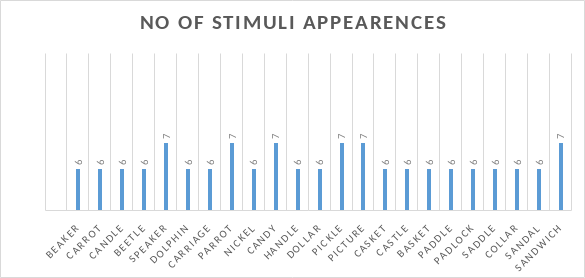
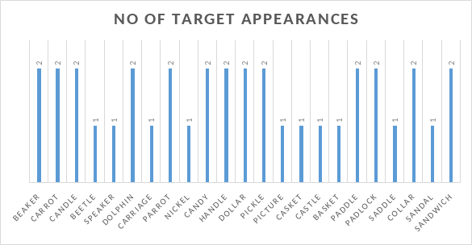
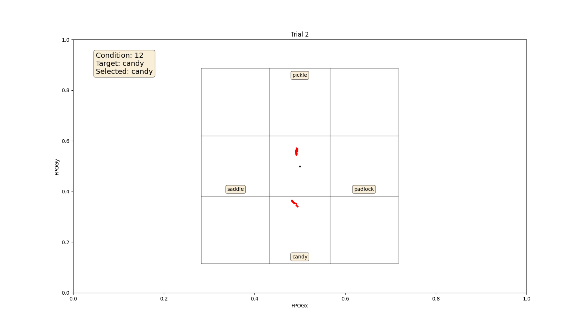

Visual World Paradigm
A classical visual world study showing how people predict upcoming words with the help of Gazepoint eye tracker
1 Introduction
1.1 Visual World Paradigm
The visual world paradigm is an experimental framework that investigates language processing by monitoring participants’ eye movements while they interact with visual stimuli. Introduced by psychologists Richard Cooper and Thomas P. McDermott in the late 1990s, this paradigm have been continuosly refined and expanded, adapting it to different research questions and using advancements in eye-tracking technology to gain deeper insights into real-time language comprehension and visual attention processes. Through this framework the researchers try to simulate the integration of spoken language and visual information as they naturally occur in everyday situations so that we can draw inferences on the attention focus on specific objects in their visual display over time.
1.2 Objective of our project
Our research question is:
Our project is to study the nature of spoken word recognition as the word unfolds. We try to investigate the visual world paradigm by using the participants’ eye movements which serve as an index of their ongoing language processing and interpretation. We dive deeper in trying to understand how the participants predict the upcoming word in a spoken instruction and how the cognitive mechanisms underlying real-time language comprehension influence their gaze patterns.
We aim to explore two fundamental conclusions concerning spoken word recognition and the underlying models, based upon the established research in this domain:
Spoken word recognition is dynamic in nature which suggests that listeners continuously update and refine their interpretations as more information becomes available. It is not a discrete process rather it is a continuous process that unfolds over time which means that listeners don’t just process words in isolation. As the speech or the spoken word unfolds, listeners use contextual cues, phonetic information, and their linguistic knowledge to build and revise their understanding of the spoken input.
Spoken word recognition models like the (Marslen-Wilson,1987 (Marslen-Wilson, 1987); Marslen-Wilson & Welsh, 1978 (Marslen-Wilson and Welsh, 1978)), (Norris, 1994 (Norris, 1994)), (McClelland & Elman, 1986 (McClelland and Elman, 1986)) etc., make assumptions that multiple candidates compete for recognition during the unfolding of the spoken word. For example in the cohort model the authors proposes that when a word is heard, it triggers some potential words (a ‘cohort’) that share the initial sounds. For instance, when ‘beaker’ is heard, both ‘beaker’ and ‘beetle’ become active choices. As speech unfolds, mismatched sounds cause activation of irrelevant words (like ‘beetle’ in this case) to decrease. Eventually, the correct word is chosen when there’s enough evidence to support it.
Paul D.Allopenna, James S. Magnuson and Michael K. Tanenhaus in their paper (Allopenna et al., 1998) investigated a similar structure of the experiment to validate the above conclusions. One of the experiment was replicated by us to validate the hypothesis by using the following results in the form of probability of fixations over time. This is the reference paper for our project, which we will be referring to throughout the report.

In the graph shown in Figure 1 we have the probability of fixation on four words over time. The four words are:
- : This is the target word, which is investigated for recognition.
- : Cohort is a similar sounding word to the target word. It shares the same initial phoneme with the target word. For example, in the word beaker, the cohort is beetle or beagle.
- : Rhyme is the word which rhymes with the target word. For example, in the word beaker, the rhyme is speaker. or for the word candle the rhyme is handle.
- : This is a word which is totally unrelated to the target word. For example, in the word beaker, the unrelated word is carriage or sandwich.
The figure is plotted against time in milliseconds. The x-axis represents the time in milliseconds and the y-axis represents the probability of fixation on each of the four words. The figure is plotted for the full competitor condition (more about conditions in a later section). The word offset is at around 375 ms i.e. the average duration of the auditory stimulus. The figure shows that the participants fixate on the cohort word more than the other words in the beginning. This is because the cohort word shares the same initial phoneme with the target word but also attends the rhyme word as it rhymes with the target word. The participants fixate on the target word after the word offset. The figure also shows that the participants fixate on the unrelated word the least. This is because the unrelated word is totally unrelated to the target word and thus the participants do not fixate on it.
With reference to the sample words used in the figure, in the beginning the participants hear [bi], which could be the beginning of beaker but also could be the beginning of beetle. So during the first 400 ms the particpants start looking at both of those words, more than they look at the others. After some time as they hear the [k] i.e. now they are hearing [bik], thus they discard their choice of beetle and stop looking at it. But by the time they’ve heard the whole word beaker, they might realize that beaker rhymes almost exactly with speaker and get confused about if they heard speaker at the very first place. For the last word carriage the pronunciation is totally unrelated to the target beaker, so there is a very less probability of the participant actually fixation at the unrelated word.
Through this project we try to replicate the same results obtained by the authors in the reference paper (Allopenna et al., 1998) and validate the same through the eye tracking experiment we conduct with our participants.
2 Experiment Design
2.1 Software and Hardware
Software: The experiment is designed in OpenSesame(Mathôt et al., 2012) which is a graphical experiment building software to create experiments for psychology, neuroscience, and experimental economics. Eye tracker can be integrated with OpenSesame to record the eye movements of the participants, which is finally used to analyze the data. It is available in Windows, Mac OS and Linux.
Language: Python was used along with the OpenSesame GUI to create the experiment. Libraries like Pandas, Numpy, Matplotlib were used to analyze the data. For backend processing in the OpenSesame GUI, PsychoPy was used. Other options available for backend processing are PyGame, etc.
Eye Tracker: The experiment is conducted using the GazePoint GP3+ eye tracker. It is a binocular eye tracker that can record at 150 Hz. The eye tracker is connected to the computer and the participants are seated at a distance of around 60 cm from the screen. The experiment was conducted in a dimly lit laboratory setup to avoid any external light source that might interfere with the eye tracking. The GazePoint API (Gazepoint, 2013) is referred for the anaylsis of the eye tracking data.
2.2 Structure of the Stimulus
The experiment is designed to test the participants’ ability to predict the upcoming word in a spoken instruction. The experiment is designed in such a way that the participants are presented with a visual display of four objects in a grid and they are instructed to click on the object that matches the spoken instruction.
A trial in the experiment means the response to one spoken instruction.
The following Figure 2 shows the user interface presented to the participants for each trial:

2.3 Design of the Experiment
The experiment follows the following structure in OpenSesame:
- Introduction to the experiment: It contains some preliminary instructions for the participants to understand the experiment. It also mentions that each progression will require a mouse click. The foreground color of the text is set to black and the background color is set to white throughout the experiment. Figure 3 shows the introduction to the experiment.
Initialization of variables: The position variables (Top, Buttom, Left and Right) are initialized and are used to set the position of the objects in the grid. The pygaze module is also intialized to record the eye movements of the participants.
Trial Loop Items: This loop runs the experiment for 24 trials. The trial loop contains the following sequence of events:
Fixation Cross: A fixation cross is displayed at the center of the screen. The fixation cross is a black dot on a white background. The fixation cross is displayed to ensure that the participants are looking at the center of the screen before the spoken instruction is played. The fixation cross is displayed using the sketchpad item in OpenSesame.
Stimulus:
- The visual stimulus for each trial is loaded from the
stimuli.csvfile. The csv file contains information about the four objects that are displayed in the grid. The csv file contains the following information:- Stimulus: The name of the objects that is displayed in the grid.
- Type: The type of the object. The type can be referent, cohort, rhyme or unrelated. The type of the object is used to determine the condition of the trial.
- Condition: The condition of the trial.
- Target: The target object that the participants have to click on. You can find the stimuli.csv file here.
- We also have accompaning audio stimuli for each trial. The audio is digitally recorded. The audio stimuli are recorded in the following format:
- Instruction: ‘Fixate on the object’ that the participants have to click on. You can find the audio stimuli here. Each response is captured with a mouse click. The mouse click is recorded and logged using the mouse_response item in OpenSesame.
- The visual stimulus for each trial is loaded from the
Logging: The onset and offset of the fixation cross and the stimulus (both audio and visual) is logged for each trail. We also log the position of the mouse click and the target object along with its position (top,right, buttom, left) that the participants clicked on. (More details will be proviided in the preprocessing and analysis section.)
Gaze Contingency: Two fixation audio prompts which says ‘Fixate at the center’ and ‘Now fixate at the center’ and marks the beginning and end of one trail.The fixation audio prompt is played to ensure that the participants are looking at the center of the screen before the spoken instruction is played. This is implemented by introducing a delay of 1.1s after the prompt.
End of Experiment: The experiment ends with a thank you message for the participants.
The timeline of one trial is shown in Figure 4 .
2.4 Logic of the experiment
Stimuli are chosen as per the different pairs of sets included in the reference paper by Paul D.Allopenna, James S. Magnuson and Michael K. Tanenhaus (Allopenna et al., 1998).
- For e.g., One criteria of choosing those words are based on frequency per million words in the Kucera and Francis, 1967, corpus (Kucera and Francis, 1967) .
A fixation at any point on the screen indicates that the participant is paying attention to it. Thus we record the fixations throughout the experiment to deduce the attention of the pariticipant when we instruct them to fixate or look at a certain point of the canvas.
Noting timestamps of the samples is essential. Our experiment is designed to record how a participants attends to the stimuli and how they respond to the spoken instruction while the instruction is unfolding. Thus we record the timestamps of the samples to understand the chronology of the fixation events.
Fixations at the centre of the screen marks the start and end of a trial. This is to make sure we don’t overlap the data of two trials while recording the data since each participant will have different response times and thus a fixed duration for each trial for timeout will not be feasible.
3 Stimulus Design and Preprocessing
3.1 Visual Stimuli
For our study, we required uncomplicated and easily comprehensible stimulus images to ensure participant understanding. Therefore, we opted for line drawing images as our chosen stimuli. We sourced these stimulus images with a Creative Commons License BY-SA, obtaining them from online platforms. In cases where certain line drawings were not directly accessible, we employed an Edge Detection algorithm within GIMP to create the desired line drawing stimuli. Each individual stimulus measures 256 x 256 pixels and is saved in PNG format. The following Figure 5 illustrates an example of the stimuli used in our experiment.
Based on the paper we referred, we have also selected the similar stimulis for our experiment to replicate it. The experiment uses eight ‘referent - cohort - rhyme - unrelated’ sets and thus intoal we require 32 stimulis. Below are the 8 sets of stimulis:
- beaker, beetle, speaker, dolphin
- carrot, carriage, parrot, nickel
- candle, candy, handle, dollar
- pickle, picture, nickel, speaker
- casket, castle, basket,nickel
- paddle, padlock, saddle, dollar
- dollar, dolphin, collar, beaker
- sandal, sandwich, candle, parrot
3.2 Auditory Stimuli
As outlined in the referenced paper, during the course of the experiment, the examiner verbally provided instructions to each participant for every trial, such as ‘pick up the beaker’ However, this approach could potentially consume a significant amount of time and introduce errors, as the duration taken by the examiner to vocalize the stimulus name and instructions might differ for various participants. To prevent potential errors stemming from variations in the examiner’s delivery speed, audio stimuli were generated that audibly articulated both the stimulus names and the associated actions to be performed. To facilitate this process, the acoust.io website was employed to create the essential audio stimuli. The subsequent configuration was implemented to ensure the uniformity of the experiment’s execution:
- Voice Profile: DAVIS
- Playback speed: 0.8x
- Sampling rate: 48Hz (relevant for use with psychoPy backend in OpenSesame)
3.3 Stimuli Preprocessing
The stimuli collected needed to be preprocessed before they could be used in the experiment. The preprocessing steps are as follows:
Resizing the line drawings into 256x256 pixels. The OpenCV library was used to read and resize the images.
img = cv2.resize(img, size)Converting the audio files to
.wavformat. The audio files were generated in.mp3format. Thefor file in $DIRPATH/*.mp3; do filename=$(basename "$file") filename="${filename%.*}" ffmpeg -i $file $OUTDIR/$filename.wav doneA trailing silence after each audio was observed which would affect the response time of the participants. The silence was removed using the
pydublibrary.def detect_leading_silence(sound, silence_threshold, chunk_size=10): trim_ms = 0 # ms while sound[trim_ms:trim_ms+chunk_size].dBFS < silence_threshold: trim_ms += chunk_size return trim_msThe function analyzes an audio snippet to find the duration of the silence at the beginning of the signal. It iterates over chunks of the audio and measuring the volume (dBFS) in each chunk until the volume exceeds the provided silence threshold. The accumulated time of trimmed silence is then returned as the result and then removed using the
sound[trim_ms:]function, spectifying the start and the end trim duration.The sampling rate of all the audio samples was also made equal to work with the
PsychoPybackend. The sampling rate was changed to 48Hz.
3.4 Conditions
During each trial, participants were presented with four line drawings on a computer screen. They were instructed to click on one of the objects using a computer mouse. The four combinations of objects were as follows:
Full Competitor Set: This set included a referent, a cohort, a rhyme, and an unrelated object (e.g., beaker, beetle, speaker, and carriage).
Cohort Competitor Set: This set consisted of a referent, a cohort, and two unrelated objects (e.g., beaker, beetle, parrot, and carriage).
Rhyme Competitor Set: This set comprised a referent, a rhyme, and two unrelated objects (e.g., beaker, speaker, dolphin, and carriage).
Unrelated Set: In this set, there was a referent and three unrelated objects (e.g., beaker, dolphin, parrot, and nickel).
The illustration shown in Figure 6 depicts the four different types of competitor sets.
For each type of competitor set, different elements could be designated as the “target” for the trial. This determined the specific kind of lexical competition that could arise. For instance, within the full competitor set, the target could be the referent (resulting in cohort and rhyme competition), the cohort (leading to cohort competition with the referent), the rhyme (leading to rhyme competition with the referent), or the unrelated object (which was meant to eliminate competition).
Within each competitor set, every item was utilized as the target an equal number of times. The number of trials i.e. 3, was the same for all conditions. The various conditions, their frequencies, and the specific items associated with them are detailed in Figure 7.
3.5 Randomization
In addition to making sure all items appeared equally as often as targets (in order to preclude frequency-based strategies by participants), the overall frequency of each item was also controlled. A randomization alogirthm was implemented that made sure following 3 randomizations were achieved.
/textbf{Order Randomization}: The order of the trials are randomized across participants.
/textbf{Stimuli Distribution}: Each stimuli is shown approx. equal number of times.
/textbf{Target Distribution}: Each stimuli is chosen as the target an approx. equal number of times.
Figure 8 shows the number of stimuli appearances in the 36 trials and each trial has 4 stimulis. Since there were total 23 stimulis chosen for the experiment, each stimuli could get 36*4/23 = 6.26 i.e. either 6 or 7 appearances.

Figure 9 shows the number of target appearances in 36 trials. Since there 23 stimulis, each stimuli could get 36/23 = 1.56 i.e. either 1 or 2 apppearances as a target.

4 Experiment Organization
The experiment was carried out within a laboratory setting, where each session included only examiners and a single participant. Overall, 15 participants took part in the experiment. Participants received a meeting invitation in which they were asked about their availability. Important details regarding the experiment were shared, while the specific nature of the experiment remained undisclosed. Clear guidelines, including a PDF with directions to the laboratory’s location, were provided, outlining the do’s and don’ts for the day of the experiment. The examiners were responsible for the smooth execution of the experiment and thus we followed this guidelines before the experiment.
Upon the arrival of participants at the laboratory on the designated experiment day, introductory details about the data collection protocol were adhered to in accordance with the procedure. We narrated the the preliminary information to each participants before starting the experiment. Additionally, participants were requested to review and sign the consent form to confirm their agreement. To minimize interruptions during the experiment, participants were instructed to either turn off their phones or set them to silent mode.
Before commencing the experiment, participants were acquainted with the stimuli. Visual aids, in the form of pictures on a sheet, were employed for this purpose. Each participant was then guided to audibly identify and name the objects depicted in the images until they accurately named them. This preparation process ensured that participants were thoroughly prepared for the upcoming experiment.
The experiment utilized the GazePoint GP3 eye tracker as its primary tool for data collection. At the outset, participants’ eye calibration was meticulously carried out using the calibration software. Particular attention was given to ensure the accuracy of the calibration process. In instances where accuracy was compromised, recalibration was promptly administered to maintain data quality.
To facilitate the experiment, a setup with two distinct monitor screens was prepared. One screen was under the control of the participant, while the other was managed by the examiner. The sequence of events commenced with the examiner launching the experiment on the OpenGaze platform through their control. Subsequently, control was seamlessly transitioned to the participant for their active involvement.
To assist participants during the experiment, text-based instructions were presented on the screens. These instructions provided guidance and clarity, enhancing the participants’ ability to engage effectively with the task at hand.
During the course of the experiment, audio messages were introduced as additional cues. These audio cues were intentionally played at a significant volume through external speakers. Their purpose was to draw the participant’s attention to the center of the screen prior to the presentation of audio stimuli. This protocol enabled the precise tracking of the commencement and conclusion of each trial.
The experiment encompassed a total of 36 trials, contributing to an overall runtime of approximately 8 to 9 minutes. This condensed timeframe was deliberate, aimed at maintaining participants’ focus and engagement throughout the session.
When considering the holistic experience of each participant, it’s noteworthy that the entire process, from the preliminary pre-experiment information briefing to the subsequent post-experiment discussion sessions, spanned a total duration of approximately 18 minutes.
Following each experiment session, participants received a debriefing outlining the central objective of our study, and their valuable feedback was meticulously recorded. As a token of appreciation, a small energy bar was provided to each participant.
5 Quality Control
Upon gathering data from all participants but prior to delving into data analysis, a vital step of quality control was essential. This step aimed to ascertain uniform data quality across the collected dataset, aligning with the criteria outlined in the referenced paper. Accordingly, trials that failed to meet the following three criteria were excluded from the subsequent analyses.
- During a trial, the calibration deteriorated to such an extent that it was not possible to label fixations.
- The participant did not maintain fixation on the cross until the appropriate instruction began.
- The participant never fixated on or selected the correct target.
In accordance with these criteria, data from 3 participants were excluded due to quality concerns. To facilitate thorough analysis, data logs were incorporated, documenting the commencement of auditory stimuli as “LOG_AUDIO_TARGET_START” and extending up to the conclusion marked by the mouse click response as “CLICK_RESPONSE_END”. This approach aided in identifying trial durations and associating data with specific trials.
Subsequently, these logged details were cross-verified, ensuring their presence for each trial. If any logs were missing, adjustments to the sampling rate were made to uphold data integrity and quality standards.
5.1 Coordinate System
OpenSesame/ Opengaze uses a different coordinate system, to have a proper analysis of our collected data, coordinates need to be converted to cartesian system. This section is expanded on further in Section 6.2.3.
5.2 Fixation Plots (Spatial View)
For data analysis and examination, fixation graphs were generated. A graph depicting FPOGX against FPOGY was crafted, including solely the samples where FPOGV equaled 1. This precaution was taken to exclusively utilize valid samples.
Subsequently, a grid box representing the stimuli was incorporated, with corresponding labels for each stimuli box. Additionally, legends were introduced to the graph, encompassing information such as the Condition number, Target, and Selected Stimuli. Figure 10 and Figure 11 , show the plot of trials of one of the participant.

6 Preprocessing and Analysis
The objective of this section is to describe the preprocessing steps that were performed on the raw data obtained from the eyetracker experiments and the analysis that was performed on the preprocessed data. The analysis was performed in order to answer the research questions posed in the introduction section. The procedure described in the original paper was followed for the analysis.
6.1 Organizing the raw data into trial-wise data
The basic unit of analysis in the visual world paradigm experiment is a trial. A trial is a single instance of the experiment. The first task was to organize the raw data into trial-wise data. Here the raw data was present in the .tsv files. Each file contained the data for a single participant. The data was read into a pandas dataframe named df_interest and then the columns that were not required were dropped. The columns, TIME, BPOGX, BPOGY, FPOGD, FPOGX, FPOGY, FPOGV and USER were relevant for our analysis so these were the columns remaining in the dataframe.
The FPOGV column indicated whether the fixation was valid or not. This was determined by the fixation detection algorithm of the GP3 eyetracker.
In order to organize the entries of the dataframe into trials, the rows corresponding to the start and end of the trials needed to be identified. After acquiring the indices of the corresponding rows, the dataframe was split into multiple dataframes, each corresponding to a single trial.
# get the indices of the rows where the user column contains the phrase 'START_TRIAL'
start_indices = df_interest[df_interest["USER"].str.contains("START_TRIAL")].index
# get the indices of the rows where the user column contains the phrase 'FINAL_FIXATION_END'
end_indices = df_interest[df_interest["USER"].str.contains("FINAL_FIXATION_END")].index
# split the dataframe based on the start and end indices
df_list = [
df_interest.iloc[start_indices[i] : end_indices[i]]
for i in range(len(start_indices))
]At this point, the dataframes corresponding to the individual trials were ready. Our analysis is mainly concerned with the gaze data from the point of onset of the audio stimilus up till the point at which the participant clicks on a stimulus. So, the dataframes were further sliced to retain only the data from the specified interval. In order to perform this, the USER column was used. The rows corresponding to the start of the audio stimulus and the end of the click response were identified by the strings LOG_AUDIO_TARGET_START and CLICK_RESPONSE_END respectively. The rows between these two specified row indices were sliced and the resulting dataframes were stored in a list named audio_df_list. The dataframe corresponding to one trial is shown in Figure 12.
# extract the row index where the user column contains the phrase 'LOG_AUDIO_TARGET_START'
audio_start_index = selected_df[
selected_df["USER"].str.contains("LOG_AUDIO_TARGET_START")
].index[0]
# extract the row index where the user column contains the phrase 'LOG_AUDIO_TARGET_END'
audio_end_index = selected_df[
selected_df["USER"].str.contains("CLICK_RESPONSE_END")
].index[0]
# split the dataframe based on the audio start and end indices
# store the split dataframe in a list
audio_df_list.append(selected_df.iloc[audio_start_index : audio_end_index + 1])6.2 Extracting trial information
6.2.1 Exploring the logs in the .tsv files
The logs present in the .tsv files are important for our analysis. Apart from containing the data recordings from the experiments, they also contain the information about the individual trials. In the text block below, the logs for a sample trial are shown.
START_EXP
START_TRIAL: 0 T: SADDLE.PNG R: PICKLE.PNG B: PADLOCK.PNG L: CANDY.PNG
FIXATE_CENTER_AUDIO_ONSET, COND: 12 TARGET: CANDY
CENTRE_GAZE_START
INSTRUCTION_TO_CLICK_ONSET
LOG_AUDIO_TARGET_START
LOG_AUDIO_TARGET_END
CLICK_RESPONSE_END
FINAL_FIXATION_START, SELECTED: CANDY.PNG
FINAL_FIXATION_END
….
….
….
….
STOP_EXPThe logs are in the form of a sequence of events. Each log event is a line in the log file. Out of these log events, the following ones are relevant for our analysis:
START_TRIAL: 0 T: SADDLE.PNG R: PICKLE.PNG B: PADLOCK.PNG L: CANDY.PNG: This line contains the information about the trial. The trial number is 0. The images on the left, right, top and bottom of the target image areSADDLE.PNG,PICKLE.PNG,PADLOCK.PNGandCANDY.PNGrespectively.FIXATE_CENTER_AUDIO_ONSET, COND: 12 TARGET: CANDY: Other than indicating the onset of the audio for fixation, this line also contains the target word and the condition number. In this case, the target word isCANDYand the condition number is 12.FINAL_FIXATION_START, SELECTED: CANDY.PNG: This line indicates the onset of the final fixation on the target image and the stimulus that was selected. The participant selected the imageCANDY.PNGas the target image.
Following the slicing procedure mentioned the previous section, the indices of the rows corresponding to these three log events are retrieved.
# get all rows whose indices are stored in start_indices
# will be used to extract the position of the stimuli
trial_strings = df_interest.iloc[start_indices]["USER"].reset_index(drop=True)
# get the indices of rows that contain the phrase 'FIXATE_CENTER_AUDIO_ONSET'
target_row_indices = df_interest[
df_interest["USER"].str.contains("FIXATE_CENTER_AUDIO_ONSET")
].index
target_rows = df_interest.iloc[target_row_indices].reset_index(drop=True)["USER"]
# get the indices of rows that contain the phrase 'FINAL_FIXATION_START'
fixation_row_indices = df_interest[
df_interest["USER"].str.contains("FINAL_FIXATION_START")
].index
fixation_rows = df_interest.iloc[fixation_row_indices].reset_index(drop=True)["USER"]6.2.2 Applying regex on the log event strings
The retrieved data were all of the datatype string so regex was used to extract the data points of interest. This consisted of the name of the stimulus at the top, bottom, left and right positions of the grid, the target word, the condition number and the selected stimulus. The extracted data were stored in a python dictionary named stimuli_loc_dict with appropriate keys.
# use regex to extract the number afer 'COND:'
cond_numbers = [re.findall(r"COND: (\d+)", row)[0] for row in target_rows]
# use regex to extract the word after 'TARGET:'
target_words = [re.findall(r"TARGET: (\w+)", row)[0] for row in target_rows]
# use regex to extract the word after 'SELECTED: '
selected_words = [re.findall(r"SELECTED: (\w+)", row)[0] for row in fixation_rows]
# use regex to extract the image names at the top, bottom, right and left positions
top_stimuli = [
re.findall(r"T: (\w+)", trial_string)[0] for trial_string in trial_strings
]
bottom_stimuli = [
re.findall(r"B: (\w+)", trial_string)[0] for trial_string in trial_strings
]
right_stimuli = [
re.findall(r"R: (\w+)", trial_string)[0] for trial_string in trial_strings
]
left_stimuli = [
re.findall(r"\sL: (\w+)", trial_string)[0] for trial_string in trial_strings
]6.2.3 Dealing with multiple coordinate systems
The gaze data contained in audio_df_list provided the coordinates where the participant was fixating at a given timestamp but for our task we needed to know which stimulus the participant was fixating at. The coordinates of the grid boxes were noted from the OpenSesame experiment UI. But one issues with this data is that these coordinates had the origin at the center of the screen whereas the gaze data had the origin at the top left corner of the screen. So, the coordinates of the grid boxes were converted to the coordinate system of the gaze data and then scaled to the range [0, 1]1. The functions shift_coordinate_system and shift_coordinate_system_single were defined for this purpose. The function shift_coordinate_system accepted a dictionary of coordinates while the function shift_coordinate_system_single accepted a single set of coordinates (tuple). The functions returned the shifted coordinates.
# shift the origin from (0, 0) to (-960, 540)
# perform the same on outer_points and inner_points
def shift_coordinate_system(coord_dict):
for key, value in coord_dict.items():
coord_dict[key] = (value[0] + 960, -1 * value[1] + 540)
# scale to [0, 1]
coord_dict[key] = (coord_dict[key][0] / 1920, coord_dict[key][1] / 1080)
return coord_dict
def shift_coordinate_system_single(coord):
coord = (coord[0] + 960, -1 * coord[1] + 540)
coord = (coord[0] / 1920, coord[1] / 1080)
return coordThe shift_coordinate_system function can convert OpenSesame UI coordinates to the cartesian coordinate system (origin on the bottom left corner) and scale them to the range [0, 1]. The gaze data acquired from the GP3 eye tracker follows a different coordinate system. The origin of the gaze data coordinate system is at the top left corner of the screen. Additionally, the y-axis is inverted, meaning that the y-coordinate increases as the participant looks down. In order to convert the gaze data to the cartesian coordinate system in order to enable comparison with the transformed OpenSesame UI coordinates, the function shift_coordinate_system_top_left_to_bottom_left was defined. The scaled version of the cartesian coordinates was chosen in order to enable use with plotting libraries such as matplotlib and seaborn.
def shift_coordinate_system_top_left_to_bottom_left(x, y):
return (x, -1 * y + 1)The GP3 gaze data coordinates are in the range [0, 1] so no scaling is required.
6.3 Fixation plots
The preprocessing steps described in the previous sections are performed on the recorded data, it is possible to plot the fixations of the participants (See Section 5.2). Such plots allow us visualize the fixations of the participants and identify any outliers. The plot elements can be classified into two groups:
Overlay elements: These elements are plotted in order to provide reference for the position of the grid and indicate the stimulus image in each grid box element. The condition number and the target word are also displayed in the plot. The function
draw_gridis used to draw the grid.def draw_grid(inn, out, ax): # draw line from A to B ax.plot( [out["A"][0], out["B"][0]], [out["A"][1], out["B"][1]], color="black", alpha=0.3 ) # draw line from B to C ax.plot( [out["B"][0], out["C"][0]], [out["B"][1], out["C"][1]], color="black", alpha=0.3 ) # draw line from C to D ... ... # create a tiny circle at the center ax.scatter(inn["M"][0], inn["M"][1], color="black", s=5)
The text elements are plotted using matplotlib.pyplot.text() function. See example:
# top stimuli
ax.text(
0.5,
0.8685,
stimuli_dict[i][0].lower(),
transform=ax.transAxes,
fontsize=10,
verticalalignment="top",
bbox=props,
ha="center",
)Fixation elements: These elements are plotted in order to indicate the fixations of the participants. As indicated in the code block below, the matplotlib scatter function is used.
# new_fpog_x and new_fpog_y are the x and y coordinates of the fixations ax.scatter(new_fpog_x, new_fpog_y, color='red', s=5)
The fixation plots can be generated by running the script generate_fixation_plots.py in the src directory.
6.4 Deduce location of fixations
Using the coordinates of the edges of the grid boxes, it is possible to deduce the location of the fixations. The gridbox has four boxes that where a stimulus can be placed. The coordinates of the fixations and the coordinates of the stimulus boxes are converted to the scaled cartesian coordinate system. The function check_if_within_rect accepts the x and y coordinates of the fixation and the coordinates of the stimulus box and returns a boolean value indicating whether the fixation is within the stimulus box. The function check_if_within_rect is called for each stimulus box and the stimulus box for which the function returns True is the stimulus box where the participant was fixating.
def get_rect(x, y):
if check_if_within_rect(x, y, top_rect):
return 'top'
elif check_if_within_rect(x, y, right_rect):
return 'right'
elif check_if_within_rect(x, y, bottom_rect):
return 'bottom'
elif check_if_within_rect(x, y, left_rect):
return 'left'
elif check_if_within_rect(x, y, centre_rect):
return 'centre'
else:
return 'outside'The function get_rect is applied to each row of the dataframe using the df.apply function. The resulting column is named rect (see Figure 13). At the point, for each data point, we know at which stimulus box the participant was fixating.
# use df.apply to apply the get_rect function to each row
audio_df_valid_fixation["rect"] = audio_df_valid_fixation.apply(
lambda row: get_rect(row["FPOGX"], row["FPOGY"]), axis=1
)rect column (highlighted) indicates the stimulus box where the participant was fixating.6.5 Mapping stimulus location to stimulus type
The analysis plot is concerned with the stimulus type rather than the stimulus location. The fixations have already been mapped to the stimulus location so by using the data available in the csv log file it was possible to map the stimulus location to the stimulus type for each trial. The csv logfile contains the following columns, referent, cohort, rhyme, distractor, target, trial number and condition number. Each row indicates the names of the stimulus that was assigned the role of referent, cohort, rhyme, etc., for a given trial.
The csv log file was read into a pandas dataframe named logger_df. This dataframe has 36 rows, each corresponding to a trial. The information available in this dataframe can be combined with that available in the dictionary stimuli_loc_dict to map the stimulus location (top, right, bottom, left) to the stimulus type. The columns top, right, bottom and left were added to the dataframe logger_df and the values were populated using the dictionary stimuli_loc_dict.
# add the data from the stimuli_loc_dict to the logger_df
logger_df["top"] = [
stimuli_loc_dict[idx][0].lower() for idx in logger_df["count_trial_sequence"]
]
logger_df["right"] = [
stimuli_loc_dict[idx][1].lower() for idx in logger_df["count_trial_sequence"]
]
logger_df["bottom"] = [
stimuli_loc_dict[idx][2].lower() for idx in logger_df["count_trial_sequence"]
]
logger_df["left"] = [
stimuli_loc_dict[idx][3].lower() for idx in logger_df["count_trial_sequence"]
]
top, right, bottom and left (highlighted in red) contain the names of the stimuli at the top, right, bottom and left positions of the grid respectively for each trial. The values of these columns were determined using stimuli_loc_dict dictionary and the existing columns of logger_df (highlighted in blue).These new column were filled by the names of the stimuli but we are interested in the stimulus type. The next step was to add additional columns to the logger_df dataframe that contained the type of stimuli. The columns top_type, right_type, bottom_type and left_type were added to the logger_df dataframe. The values of these columns were populated by checking if the stimulus name was the same as the name of the referent, distractor, rhyme or cohort. The code block below shows how the contents of the logger_df were utilized to fill the columns top_type, right_type, bottom_type and left_type.
# create columns 'top_type', 'right_type', 'bottom_type', 'left_type' and populate them with the type of stimuli
# by checking if the stimuli is a referent, distractor, rhyme or cohort
logger_df['top_type'] = logger_df.apply(lambda row: 'referent'
if row['top'] == row['referent'] else 'distractor'
if row['top'] == row['distractor'] else 'rhyme'
if row['top'] == row['rhyme'] else 'cohort'
if row['top'] == row['cohort'] else 'NA', axis=1)
...
...
logger_df['left_type'] = logger_df.apply(lambda row: 'referent'
if row['left'] == row['referent'] else 'distractor'
if row['left'] == row['distractor'] else 'rhyme'
if row['left'] == row['rhyme'] else 'cohort'
if row['left'] == row['cohort'] else 'NA', axis=1)Now every fixation could be mapped to a stimulus type i.e. whether the participant was fixating on the referent, distractor, rhyme or cohort. Although all required data for the mapping was available, the mapping was actually performed by the function get_seen_stimuli_type that loops through the rows of the logger_df dataframe and returns the stimulus type that the participant was fixating on. This function modified the seen column of the audio_df_valid_fixation dataframe so that it now contained the stimulus type that the participant was fixating on.
6.6 Issue of unequal entries per trial
The task of the final analysis plot is to visualize the proportion of fixations on the each stimulus type across trials and all participants. In order to create the plot, each trial must have equal number of data points. But the number of data points per trial is not equal, the number is dependent on the number of valid fixations made by the participant.
This issue is evident from the following plots:
6.6.1 Plotting the number of fixations per trial for one participant
This is done to visualize the number of fixations per trial for one participant. See Figure 15.
It is evident from the plot that the number of fixations per trial is not equal.
6.6.2 Comparing the trial durations for each condition number
The trials corresponding to each condition number posed a different task to the participant. The duration of the trials for each condition number was compared to see if the condition number had any effect on the number of fixations. See Figure 16.

It is evident from the plot that the duration of the trials for each condition number does not vary significantly. For the same condition number, the duration of the trials varies slightly. This is due to the fact that the participants were allowed to take their time to respond to the audio stimulus. Overall, there is no trend showing that some condition numbers have longer trials than others.
6.6.3 Solution: Binning the data
The data points were binned in order to ensure that each trial had equal number of data points. The binning was performed on the basis of time. An overall trial duration avg_duration was calculated and it was split into N equal parts. N is a user-defined parameter, it was chosen as 80 in our analysis. The data points were then binned into these parts.
avg_duration = 1.6
print("Average duration is set to {} s".format(avg_duration))
# divide the avg duration into N equal parts
N = 80
duration_thresholds = np.linspace(0, avg_duration, N, endpoint=True)The duration_thresholds array contains the time thresholds for each bin.
The overall trial duration was calculated by averaging the trial duration across all trials and across all participants.
For determining the duration of each trial, the timestamp of the first fixation and the timestamp of the last fixation were used. The difference between these two timestamps was calculated and this was the duration of the trial. This duration was also used in the previous section to compare the trial durations for each condition number.
first_fixation_time = []
last_fixation_time = []
for idx, row in logger_df.iterrows():
trial_df = audio_df_valid_fixation[audio_df_valid_fixation['trial_number'] == idx]
first_fixation_time.append(trial_df['TIME'].min())
last_fixation_time.append(trial_df['TIME'].max())
logger_df['first_fixation_time'] = first_fixation_time
logger_df['last_fixation_time'] = last_fixation_time
logger_df['duration'] = logger_df['last_fixation_time'] - logger_df['first_fixation_time']After the bin thresholds were determined, the data points were binned into these thresholds. One of the most important column of the logger_df dataframe was the seen column that contained the name of the type of stimulus that was fixated on by the participant. During binning, the seen column values of entries belonging to the same bin are replaced by a single value. The value is determined by the following rules: * First, the values centre and outside are replaced by NA (empty string). * If the bin contains no values, the seen value is set to NA. * If the bin contains only one value, the seen value is set to that value. * If the bin contains more than one value, the seen value is set to the value that occurs the most number of times in the bin.
See get_relevant_rect_value() function in source code for implementation details.
A new dataframe count_df was created to store the binned data. The columns of this dataframe were trial_number, condition_number, start_time, end_time, bin_start, bin_end, real_val_count, val_count and seen.
count_df dataframe contains the binned data. The highlighted columns bin_start, bin_end indicate the start and end time of the bin.trial_numberandcondition_numberwere copied from thelogger_dfdataframe.start_timeandend_timewere the timestamps of the first and last fixation respectively belonging to the bin.bin_startandbin_endwere the start and end time of the bin.real_val_countwas the number of data points in the bin.val_countwas the effective number of data points in the bin. This was the number of data points in the bin after calling theget_relevant_rect_value()function.seenwas the value of theseencolumn after calling theget_relevant_rect_value()function.
6.7 Implementing the conditions of competitor sets
The condition numbers of the four different types of competitor sets are as follows:
full_competitor_sets_cond = [1, 2, 3, 4]
cohort_competitor_sets_cond = [5, 6, 7]
rhyme_competitor_sets_cond = [8, 9, 10]
distractor_competitor_sets_cond = [11, 12]As per the conditions, the instances of rhyme in the seen column were replaced by distractor for the trials with condition numbers belonging to the cohort competitor sets.
count_df.loc[
count_df["condition"].isin(cohort_competitor_sets_cond), "seen"
] = count_df["seen"].apply(lambda x: "distractor" if x == "rhyme" else x)Similarly, the conditions for rhyme competitor sets and distractor competitor sets were implemented.
6.8 Prepare data for plotting
6.8.1 One hot encoding
The calculation of fixation probabilities was made simpler by the one hot encoding of the seen column. This was done using the pd.get_dummies() function. The resulting dataframe was named one_hot_count_df. As a result of the one-hot encoding, the seen column was replaced by the columns seen_cohort, seen_distractor, seen_referent and seen_rhyme. The values of these columns were either 0 or 1. The value 1 indicated that the participant was fixating on the stimulus type indicated by the column name. The value 0 indicated that the participant was not fixating on the stimulus type indicated by the column name.
pd.get_dummies() adds columns of type boolean. The columns were converted to type int using the astype() function.
# one hot encode the 'seen' column
one_hot_count_df = pd.get_dummies(count_df, columns=['seen'])Several of the trials acted as filler trials. These trials were not relevant for our analysis so they were removed from the dataframe.
# remove the rows that are not relevant for the final analysis
one_hot_count_df = one_hot_count_df[one_hot_count_df['condition'] != 2]
...
one_hot_count_df = one_hot_count_df[one_hot_count_df['condition'] != 12]The groupby function was then used to group the rows by the columns bin_start, bin_end and calculate the fixation counts for each bin (See Figure 18). The sum() function was used to calculate the fixation counts. The resulting dataframe was named grouped_time_bins_df.
6.8.2 Implementing the conditions of the analysis plot
The final plot consisted of lines for the referent, cohort, rhyme and distractor stimuli. As per the specification of the analysis plot, the plot for the referent stimuli was created using the fixation data from three competitor sets (full competitor set, cohort competitor set and rhyme competitor set). The plot for the cohort stimuli was created using the data only from the full competitor sets and the cohort competitor sets and the plot for the rhyme stimuli was created using data only from the full competitor sets and the rhyme competitor sets.
In order to implement these requirements, the dataframe one_hot_count_df was sliced to form three different dataframes, each corresponding to the three competitor sets. The dataframes were named full_competitor_sets_df, cohort_competitor_sets_df and rhyme_competitor_sets_df. The dataframe full_competitor_sets_df contained the data from the full competitor sets. The dataframe cohort_competitor_sets_df contained the data from the full competitor sets and the cohort competitor sets. The dataframe rhyme_competitor_sets_df contained the data from the full competitor sets and the rhyme competitor sets. The dataframes were created by filtering the rows of the one_hot_count_df dataframe based on the condition numbers of the competitor sets.
full_competitor_sets_df = one_hot_count_df[
one_hot_count_df["condition"].isin(full_competitor_sets_cond)
]
...
rhyme_competitor_sets_df = one_hot_count_df[
one_hot_count_df["condition"].isin(rhyme_competitor_sets_cond)
]The dataframe referent_calc_sets was created by concatenating the dataframes full_competitor_sets_df, cohort_competitor_sets_df and rhyme_competitor_sets_df.
referent_calc_sets = pd.concat(
[
one_hot_count_df_full_competitor_sets,
one_hot_count_df_cohort_competitor_sets,
one_hot_count_df_rhyme_competitor_sets,
],
ignore_index=True,
)Similarly, the dataframes cohort_calc_sets and rhyme_calc_sets were created.
The fixation counts for these dataframes were not the same as those obtained from the grouped_time_bins_df dataframe. This is because the data contained in the dataframes referent_calc_sets, cohort_calc_sets and rhyme_calc_sets were a subset of the data contained in the grouped_time_bins_df dataframe. While the grouped_time_bins_df dataframe contained the fixation counts disregarding the conditions necessary for the analysis.
Therefore, the groupby function for calculating the sum of the fixation counts was applied to these dataframes as well. The idea was to update these stimulus fixation counts (along with the total counts) in the grouped_time_bins_df dataframe.
# groupby sum for referent_calc_sets
groupby_time_bins_df_referent = (
referent_calc_sets.groupby(["bin_start", "bin_end"]).sum().reset_index()
)
# groupby sum for cohort_calc_sets
groupby_time_bins_df_cohort = (
cohort_calc_sets.groupby(["bin_start", "bin_end"]).sum().reset_index()
)
# groupby sum for rhyme_calc_sets
groupby_time_bins_df_rhyme = (
rhyme_calc_sets.groupby(["bin_start", "bin_end"]).sum().reset_index()
)The columns of interest from these dataframes were extracted and updated in the grouped_time_bins_df dataframe. The columns of interest, the dataframes from which they were extracted and the columns that were updated in the grouped_time_bins_df dataframe are shown in the table below:
| Column name2 | Source dataframe | Updated column name3 | Type4 |
|---|---|---|---|
seen_referent |
groupby_time_bins_df_referent |
seen_referent |
S |
seen_cohort |
groupby_time_bins_df_cohort |
seen_cohort |
S |
seen_rhyme |
groupby_time_bins_df_rhyme |
seen_rhyme |
S |
val_count |
groupby_time_bins_df_referent |
referent_val_count |
T |
val_count |
groupby_time_bins_df_cohort |
cohort_val_count |
T |
val_count |
groupby_time_bins_df_rhyme |
rhyme_val_count |
T |
The code snippets for these changes are shown below:
# update the stimuli fixation counts
groupby_time_bins_df['seen_referant'] = groupby_time_bins_df_referant['seen_referant'].values
groupby_time_bins_df['seen_cohort'] = groupby_time_bins_df_cohort['seen_cohort'].values
groupby_time_bins_df['seen_rhyme'] = groupby_time_bins_df_rhyme['seen_rhyme'].values
# update the total fixation counts
groupby_time_bins_df['referant_value_count'] = groupby_time_bins_df_referant['val_count'].values
groupby_time_bins_df['cohort_value_count'] = groupby_time_bins_df_cohort['val_count'].values
groupby_time_bins_df['rhyme_value_count'] = groupby_time_bins_df_rhyme['val_count'].values6.9 Calculating the fixation probabilities
The calculation of the fixation probabilities was the simple task of dividing the stimulus fixation counts by the respective total fixation counts. The contents of the stimulus fixation count columns were updated with the fixation probabilities.
groupby_time_bins_df["seen_referant"] = groupby_time_bins_df.apply(
lambda x: x["seen_referant"] / x["referant_value_count"]
if x["referant_value_count"] != 0
else 0,
axis=1,
)
groupby_time_bins_df["seen_cohort"] = groupby_time_bins_df.apply(
lambda x: x["seen_cohort"] / x["cohort_value_count"]
if x["cohort_value_count"] != 0
else 0,
axis=1,
)
# special case for distractor competitor sets
val_count = groupby_time_bins_df["val_count"].values
groupby_time_bins_df["seen_distractor"] = groupby_time_bins_df.apply(
lambda x: x["seen_distractor"] / x["val_count"] if x["val_count"] != 0 else 0,
axis=1,
)6.10 Saving per participant data
The dataframe with the fixation probabilities were saved to a csv file. Each participant should have a separate csv file.
# save groupby_time_bins_df as 'intermediate_csv/sub-x.csv'
groupby_time_bins_df.to_csv(
"intermediate_csv/sub-" + str(subject_number) + ".csv", index=False
)Before running the script for the final analysis plot, ensure that the processing script has been run for all participants. The script for the final analysis plot only considers the data that is available in the form of csv files for its analysis.
6.11 Plot of the final analysis
The main function of the final analysis plot script is to aggregate the data from the csv files and plot the fixation probabilities for each stimulus type over time.
The csv files were read into a pandas dataframe one by one and then concatenated into a single dataframe. The resulting dataframe was named agg_df.
agg_df = pd.DataFrame()
for csv in relevant_csvs:
filename = "sub-" + str(csv) + ".csv"
df = pd.read_csv(csv_path + filename)
# concat the dataframes
agg_df = pd.concat([agg_df, df], axis=0).reset_index(drop=True)The entirety of the data is then aggregated by the columns bin_start and bin_end. The time bins are the common link between the data from different participants. The data was grouped by the time bins and the mean of the fixation probabilities is calculated for each time bin. The resulting dataframe was named agg_df_mean.
# group_by bin_start and bin_end and get the mean of the other columns
agg_df_mean = agg_df.groupby(['bin_start', 'bin_end']).mean().reset_index()The data after this step was ready for plotting.
# plot as line plots
fig, ax = plt.subplots(figsize=(10, 6))
ax.plot(
agg_df_mean["bin_start"],
agg_df_mean["seen_referant"],
"ro--",
label="referant"
)
ax.plot(
agg_df_mean["bin_start"],
agg_df_mean["seen_cohort"],
"bs--",
label="cohort"
)
ax.plot(
agg_df_mean["bin_start"],
agg_df_mean["seen_rhyme"],
"g^--",
label="rhyme"
)
ax.plot(
agg_df_mean["bin_start"],
agg_df_mean["seen_distractor"],
"c.--",
label="distractor"
)A vertical dashed line was drawn at the point of average audio offset. The average audio offset was calculated by averaging the audio offset for all audio stimulus.
# draw a vertical line at average_audio_stimuli_offset, do not add to legend
ax.vlines(
average_audio_stimuli_offset,
0,
ymax,
colors='k',
linestyles='dashed',
alpha=0.5
)
# add text to the plot
ax.text(
average_audio_stimuli_offset + 0.02,
ymax - 0.05,
'Average target offset',
fontsize=10
)6.12 Analysis of the obtained results
6.12.1 Validity of the analysis plots
For the final analysis of the gaze data, the fixation probabilities over time for each of the stimulus types were plotted. The plot was created by aggregating the data from all participants. Individual analysis plot consisting of fixation probabilities over time for individual participants were first created to ascertain that the data was valid. If discrepancies were found in the individual plots, the data for that participant was discarded. The data from the remaining participants was aggregated and the final analysis plot was created.
In the initial stages of the trial, all the fixation probabilities should be close to zero. This is because the participant has not yet heard the audio stimulus and hence has not yet decided which stimulus to fixate on. As the trial progresses, the fixation probabilities should increase. The fixation probabilities for the referent stimuli should increase the most. This is because the participant is expected to fixate on the referent stimuli. Moreover, the increase in the fixation probabilities should not be sudden. Sudden increase would indicate that the experiment was not conducted properly. Examples of valid analysis plots are shown in Figure 19.
The lines in the analysis plots can be identified by their markers. Refer to the legends in the plots.
See Figure 20 for an example of an invalid analysis plot. The fixation probabilities for the referent stimuli increase suddenly. This indicates that the experiment was not conducted properly.
After the data from all participants was aggregated, the final analysis plot was created. See Figure 21.
6.12.2 Inference
The audio stimuli used in our experiments are longer in duration than those used in the original paper (see Section 7.1). As a result of this, the inference events are not observed at the same time as in the original paper. The inference events are observed at a later time in our experiments.
The analysis plot from the original paper is shown in Figure 22 for comparison.

The timestamps in the following section refer to the timestamps in our analysis plot.
In the 0 to 400 ms interval, the fixation probabilities appear to be random. This is because the participants have not yet heard the audio stimulus and hence have not yet decided which stimulus to fixate on. No specific trend is observed at this point.
In the 400 to 800 ms interval, there is a increase in the number of fixations on the referent and the cohort stimuli.
The curve for the referent stimuli separates from the curve for the cohort stimuli in the 800 to 1000 ms interval.
Starting from 600 ms, the fixation probabilities for the rhyme stimuli start to increase.
Beyond the 1000 ms mark, the referent line starts to peak, leaving all the other competitors behind. At this point in the trial, the participant has identified the audio stimulus and has decided to fixate on the referent stimuli.
One major deviation that was observed in our analysis plot was that the fixation probabilities for the distractor stimuli didn’t decrease to around 0 towards the end of the trial. A small peak was observed in the distractor line at around 1400 ms. This is not observed in the original paper.
Overall, the analysis plot obtained from our experiments is similar to the analysis plot obtained from the original paper. The trends described in the above points are also observed in the analysis plot from the original paper.
7 Challenges and Limitations
7.1 What we did not replicate from the reference paper?
Average duration of auditory stimulus was changed from 375 ms to 750 ms. It was done to as it was more comprehensible for the participants.
- The average duration was calculated by taking the average of the duration of all the audio stimuli which can be found here.
Number of trials for each participant was reduced from 96 to 24. It was done to reduce the time of the experiment and to avoid recalibration of the eye tracker in between the experiment.
Audio stimuli were digital (instead of analog). It was done to avoid any noise in the audio stimuli and also to have no influence of the experimenterś accent on the participants.
Participants respond with mouse clicks instead of drag-and-drop to the correct box function as does not support drag-and-drop functionality.
Use of a 3x3 grid instead of 5x5 as we didin’t require the additional boxes for the drag-and-drop functionality as in the original paper.
No calibration functionality after each trial was added until the participant was moving their head or eyes too much.
7.2 Challenges
- Balancing of trials:
- Challenge: Our stimuli had a total of 23 unique` visual stimuli, 12 different conditions and 4 different types. Adhering to proper randomization and balancing of trials was a challenge as we had to ensure that each participant saw the same number of trials for each condition and each type and such that each object appeared equal number of times.
- Solution: Although we started tith a python script to generate the trials, we had to revert to manual creation of trials as the script was not able to generate balanced trials which was a primary requirement for our experiment.
- Random ‘freezes’ during experiment :
Challenge: The experiment encountered random freezes during its run. The freezes were random and could not be reproduced. This was a major challenge as we had to restart the experiment from the beginning. The most frequent freezes was found on the gaze contingency check, which allowed the experiment to move forward only when the participant was looking at the center of the screen.
Trials:
- While True loop
while True: gazepos = eyetracker.sample()- Periodic sampling
while True: if clock.time() - check_timer > diff: gazepos = eyetracker.sample()Switching backend to PsychoPy Made the sample rates of all the audio samples equal to work with the PsychoPy backend.
Number of trials Reduced the number of trials to 24 from 12 to reduce the time of the experiment but the problem still persisted.
Solution: Removal of gaze contingent features and instead introducing a delay to ensure that the participants are looking at the center of the screen before the spoken instruction is played. This was implemented by introducing a delay of 1.1s after the prompt.
- Eye tracker calibration:
- Challenge: The eye tracker calibration was a challenge as the participants were not able to calibrate the eye tracker properly, due to many reasons like contact lenses, glasses, height of the participants, body posture during the experiment etc.
- Solution: THe number of participants were increased to 16 to ensure that we have atleast 12 participants with proper calibration and the timing of one full experiment was reduced to a maximum of 8 minutes to avoid recalibration in between the experiments. The participants were also given a practice trial to ensure that they are comfortable with the experiment and the eye tracker calibration.
7.3 Limitations}
Since Visual World Paradigm is a well known experimental framework, it is possible that the participants might have been aware of the purpose of the experiment and thus might have been biased in their responses despite the large number of filler trials. Also, we used a relatively small set of pictures, which might have led to a learning effect i.e the participants might have been able to predict the target word based on the previous trials.
Generalizability is affected as our study participants only include university students of a specific age group, which does not fully represent the complexities and variations of real-world spoken word recognition scenarios. The results may not be applicable to other age groups or people with different educational backgrounds who might have more or less exposure to the field of cognitive psychology.
The study also may not fully address the universality of the observed effects across different languages as the original study as well as our replication is in English.
8 Future Improvements
This projects although replicates the results of the reference paper to a great extent, there are still some improvements that can make the results and the analysis more robust and reliable. Some of the improvements are as follows:
More extensive study with a larger number of participants will ensure that the results are more reliable and robust. The study can be conducted with participants from different age groups and educational backgrounds to ensure that the results are more generalizable. Also the study can be conducted in different languages to prove the universality of the observed effects.
The Gazepoint eye tracker can be replaced with a more advanced eye tracker like Eyelink 1000 which can record at a higher sampling rate and thus provide more accurate results. The Eyelink 1000 eye tracker allows less head movement and thus the recording of the eye movements are more accurate most of the time.
The experiment requires us to study the fixation behavior of the participants. Thus, better optimized fixation detection algorithms can be used and even integrated to the open source software like OpenSesame to make the analysis even better.
9 Conclusion
In this project we attempted to investigate the dynamics of predictive language processing through the visual world paradigm. We tried to replicate the experiment conducted by Paul D. Allopenna, James S. Magnuson and Michael K. Tanenhaus in their paper and validate the hypothesis that the existence of similar sounding words leads to an increased number of fixations on them, reflecting the participants’ evolving predictions of the upcoming word. We were able to replicate the results of the original study and thus validate the hypothesis, keeping into account the limitations of our study.
We summarize our conclusions as follows:
The inclusion of semantically or phonetically similar words in the spoken instructions results in a higher frequency of fixations on the visual images of the words. This phenomenon illustrates how participants are continuously adjusting their predictions for the upcoming word as they engage with the content.
Eye movement tracking is a reliable tool for investigating the time course of spoken word recognition and capturing the mapping process while the spoken word unfolds.
The results and plots obtained by us provide an empirical support for continuous and incremental mapping models of word recognition and proves that word processing is not a discrete and all-or-nothing process.
Our results suggest that as the spoken word unfolds over time, the listener gradually narrows down the set of candidate words based on the contextual information. This competition among candidate words occurs until a single word is identified or a clear winner emerges.
10 Contributions
| Task | Pritom | Kapil | Manpa |
|---|---|---|---|
| Background Literature | o | o | x |
| Experiment Design | x | o | x |
| Stimulus Design | x | x | x |
| Piloting | x | x | o |
| Data-Recording | o | x | x |
| Non-Final-Talk presenting (who talks) | x | o | x |
| Non-Final-Talk presenting (who prepares) | x | x | x |
| Final-Talk Presenting (who talks) | x | x | x |
| Final-Talk Presenting (who prepares) | x | x | x |
| Data Analysis Scripts | x | o | o |
| Report Writing | x | x | x |
- x: main contributor
- o: supporting contributor